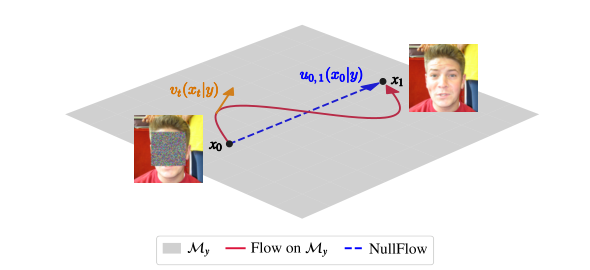
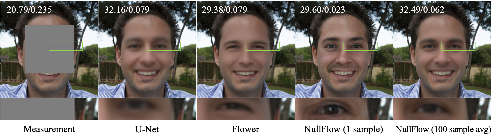
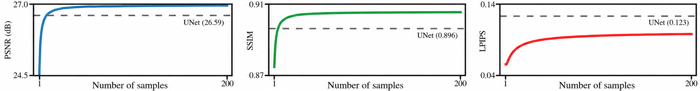

Computational Imaging Group (CIG)
NullFlow: One-Step Generative Reconstruction
A one-step posterior sampler for imaging inverse problems by learning mean flows in the measurement-consistent null space.
University of Wisconsin–Madison and Washington University in St. Louis
†Equal contribution.

Abstract
We propose NullFlow, a principled framework for one-step generative image reconstruction. The key idea is to confine the generative flow to a measurement-consistent subspace. Because the flow never leaves this subspace, NullFlow needs no separate data-fidelity corrections, unlike existing solvers.
NullFlow samples in a single network evaluation by learning the flow's average velocity, avoiding the step-by-step integration required by traditional flow matching methods. We prove that the average velocity of this constrained flow yields a training objective whose global minimizer is a one-step posterior sampler. On image inpainting, NullFlow matches state-of-the-art diffusion solvers while cutting inference from hundreds of network evaluations to one.
Core idea
Measurement consistency by construction
For an ill-posed linear forward model $y=Ax+n$, NullFlow decomposes the image into a fixed row-space component and a learned null-space component:
$x = A^\dagger Ax + (I-A^\dagger A)x$.
The flow is restricted to $\mathrm{null}(A)$, so every state remains inside the affine measurement-consistent subspace.
One-step sampling via mean flow
Instead of integrating instantaneous velocities over many time steps, NullFlow learns the average conditional velocity $u_{r,t}(x_t \mid y)$ and evaluates it once from $r=0$ to $t=1$.
$x = \mathrm{net}(A^\dagger y + P\epsilon, r=0, t=1)$.
Method overview
NullFlow transports a Gaussian null-space initialization $A^\dagger y + Pz$ to a posterior sample $x \sim p(x \mid y)$, where $P=I-A^\dagger A$ is the null-space projector. The path is designed so the observed pixels or measured components stay fixed, while only the unobserved null-space content evolves.
Training
t, r = sample_t_r()
e = randn(x.shape)
z = t * proj_null(e) + (1-t) * proj_null(x) + A_pinv(y)
# average velocity from x-prediction
def u_fn(z, r, t):
return (z - net(z, r, t)) / t
v = u_fn(z, t, t)
u, dudt = jvp(u_fn, (z, r, t), (v, 0, 1))
V = u + (t-r) * stopgrad(dudt)
loss = metric(V, e_M - x)One-step sampling
e_M = A_pinv(y) + proj_null(randn(x_shape))
x = net(e_M, r=0, t=1)Numerical evaluation
We evaluate NullFlow on noiseless center-mask inpainting with FFHQ $256\times256$ RGB images, where a fixed $128\times128$ center patch is removed. NullFlow uses one network evaluation at inference.
| Method | NFE ↓ | LPIPS ↓ | PSNR ↑ | SSIM ↑ |
|---|---|---|---|---|
| U-Net | 1 | 0.123 | 26.59 | 0.896 |
| DPIR | 200 | 0.264 | 18.42 | 0.797 |
| DPS | 1000 | 0.157 | 23.89 | 0.829 |
| DiffPIR | 200 | 0.101 | 25.12 | 0.871 |
| PnP-Flow | 500 | 0.089 | 24.80 | 0.900 |
| Flower | 500 | 0.105 | 25.03 | 0.892 |
| NullFlow | 1 | 0.055 | 24.54 | 0.874 |


Paper
BibTeX
@article{shi2026nullflow,
title = {NullFlow: One-Step Generative Reconstruction},
author = {Shi, Xiao and Chandler, Edward P. and Park, Chicago Y. and Shoushtari, Shirin and Kamilov, Ulugbek S.},
journal = {Preprint},
year = {2026}
}